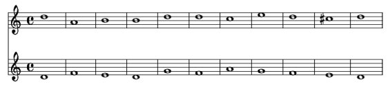
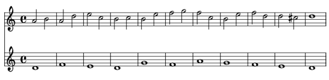
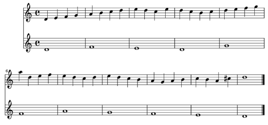
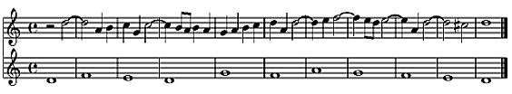

Computational Creativity
Abstract
I am fascinated by creativity and artificial intelligence.
This article, based upon an unpublished academic paper, is a very short summary of work completed as part of my MSc dissertation.
An exploratory model of creativity is demonstrated by implementing a genetic algorithm that attempts a type of musical creativity called species counterpoint (see my guide to species counterpoint).
Initial results are of comparable quality to counterpoint composed by humans. I conclude by describing areas and techniques for further development.
A Model of Creativity
One of the ways in which Margaret Boden characterizes creativity is by making a distinction between exploratory and transformational creativity. Exploratory creativity is explained as a search for new points in a conceptual space whereas transformational creativity is a change to the conceptual space itself.
Responding to the criticism that Boden's model of creativity is vague, Geraint Wiggins has attempted to make it clearer and more precise. He formalises Boden's ideas and provides an example of how they might be applied (Wiggins, 2001). This is achieved by introducing the following elements:
- U – The universe of possibilities. The set of all possible concepts (for a given domain).
- L – A language to express rules and constraints.
- R – A set of rules in L that constrain the search space.
- T – A set of rules in L that define traversal of the search space.
- [[.]] – An interpretation function for selecting concepts from U according to rules such as those defined in R.
- <<.>> – A search function for traversing a search space according to rules such as those defined in T.
- E – A set of rules in L that evaluate the quality of points within the search space.
Wiggins uses these elements to define conceptual spaces ( C ) – subsets of U that contain concepts considered in particular forms of creativity – in the following way:
C = [[R]](U)
The means by which the conceptual space C is to be explored is defined thus:
ci+1=<< R∪T >>(ci)
Exploratory creativity can therefore be characterized as an exploration of the search space C, using the search rules defined in T to find new points in C (ci) that are evaluated by the rules defined in E. Thus, an exploratory system can be described by the following sextuple:
< U, L, [[.]], <<.>>, R, T, E >
Wiggins then demonstrates that transformational creativity is merely exploratory creativity at a meta-level:
As transformational creativity is the search for new R or T or both and both R and T are expressed in L, then L becomes the space of all possible concepts. Consequently, a new language LL is required to construct new sequences in L. In addition, RL, a set of constraints in LL that define the search space of R's and T's is needed as is TL, a set of rules in LL for moving around that space. Furthermore, corresponding interpreters for selection and searching are needed (although if one uses a common general specification language for the rule-sets then it is possible to use the same interpreters at different meta-levels). Finally, EL, a set of rules in LL is used to assess the quality of the R's and T's. As a result, transformational creativity can be described by a sextuple that matches the characterization of exploratory creativity:
< L, LL, [[.]], <<.>>, RL, TL, EL >
Implementation
Ultimately the aim of both Boden and Wiggins is for an AI to simulate creativity. As a result, a move from the abstract realm of the model described above into a concrete implementation can be demonstrated by using a genetic algorithm to compose species counterpoint based upon exploratory creativity:
Genetic Algorithms
Genetic algorithms (GA) encode candidate solutions to a problem and optimize them through the process of evolution.
Candidate solutions are represented by a string of data called a chromosome. Chromosomes are subdivided into blocks called genes that encode specific elements or traits within the candidate solution. The different settings that a gene may possess are called alleles, and their location in the chromosome is called the locus. The state of the alleles in a particular chromosome is called the genotype. It is the genotype that provides information about the state of the actual candidate solution. The candidate solution itself is called a genome.
The GA attempts to find an individual genome with the best genetic material within a search space. This is achieved by testing the genome against a fitness function that evaluates the quality of each individual. The part of the search space being examined during an iteration of the GA is called the population.
The primary means by which populations transform between iterations of the GA is through the use of three operators: selection, crossover and mutation. These fulfill different roles in the GA:
- Selection chooses genomes in the current population for processing by the other two operators. The fitter the genome, the more likely it is to be selected. Fitness is a value given by the fitness function for each genome.
- Crossover is used to increase the average quality of the population through the mixing of genetically encoded information.
- Mutation is used to explore new states. It also avoids closing in on a locally occurring optimum solution by introducing random changes in the genetically encoded information between generations.
Of further consideration is the stopping condition for the GA. These tend to be one of the following three types:
- Iterating the GA through a predefined number of generations.
- Taking into account the uniformity of the population (i.e. the population has converged on a solution within the search space).
- Defining the criteria for a winner and iterating indefinitely until such an individual is found.
A description of the life cycle of a GA can be summarized thus:
- Start with a randomly generated population.
- Iterate through various populations (using the three operators previously described).
- Repeat step 2 until the stopping condition is met.
Species Counterpoint
Species counterpoint was devised by J.J.Fux as a means of teaching good compositional technique. Based upon the stylistic conventions of the great Italian composer Palestrina, it has been successfully used as a pedagogical technique for over 300 years. Students of species counterpoint have included Mozart, Beethoven, and Brahms. Species counterpoint is still taught in music conservatoires to this day.
It consists of a set of strict rules of increasing complexity concerning the valid pitch and duration relationships between notes found in contrasting melodic parts. Rules are introduced over five separate species with fifth species producing music almost as complex as free counterpoint.
The counterpoint is initially of two parts, one of which, the cantus firmus (Latin: fixed line) is a melody consisting of mainly step-wise movement using notes of semi-breve duration. It is provided for the student as a stimulus over which they set their melody using the rules of a particular species.
Thus, a species problem is set and the student practices and improves their compositional technique by providing a solution. The intention is that the rules defined in each species promote and encourage good compositional practises whilst being flexible enough to give the student a chance to be original (and thus creative).
After completing all five species in two part counterpoint the student then starts again but with three and then four part counterpoint (one part always being the cantus firmus).
Mapping Elements
For a GA to compose species counterpoint as exploratory creativity, elements from Wiggins's formal definition must be mapped onto the elements described above. This can be achieved in the following way:
- U: All possible pitch and duration combinations.
- L: A simple language related to Western music notation that is capable of representing both pitch and duration.
- [[.]]A means of selecting valid pitch / duration combinations from U according to constraints specified in L (a means of creating the initial population)
- <<.>> A means of traversing U according to constraints specified in L (the selection, crossover and mutation functions).
- R: The rules of a particular species of counterpoint as expressed in L.
- T: The rules expressed with L that constrain the selection and crossover operators.
- E: The rules and heuristics defined in L that evaluate the potential solutions (the GA's fitness function).
L solves the problem of representing pitch and duration in such a way that musical information can be encoded and processed by the genetic algorithm:
Pitch is a measure of magnitude in that notes are higher or lower than each other. If one limits L to using just diatonic notes (i.e. those within a particular key) then numeric values can be used as an alphabet to represent pitches (pitch name at the top, numeric value underneath):

The tonic note (note of the key) is always denoted by the numeric value 5. This allows notes to be represented as both above and below the tonic. In the above example the key is the Dorian mode with the tonic being D. Thus, a melody starting with the pitches D, F, E, D, G and F would be represented with the numeric values 5, 7, 6, 5, 8 and 7.
With regard to the representation of duration in the first four species of counterpoint, given the number of notes in the cantus firmus, it is possible to work out the number of notes and their durations from the requirements of the species being used. For example, first species counterpoint only uses semi-breves whereas third species only uses crotchets. As a result, the representation (genome) merely records the order and value of the various pitches that make up the output since duration is defined by the species.
In the case of fifth species counterpoint, given the number of notes in the cantus firmus and by using the smallest possible note duration as a unit of measurement (crotchet), one is able determine the maximum number of possible notes in the output counterpoint. Furthermore, through the use of special pitch values (17-20) one is able to extend the small duration values into longer ones (synonymous with the tie in Western musical theory) and denote special, strictly defined decorative quaver-figures.
Thus, L consists of an alphabet of numeric values that can be ordered in such a way to represent pitch, certain decorative figures and duration. As a result each genome consists of alleles containing values from the alphabet of L.
With regard to the execution of the GA, upon creating the initial population each genome is populated with randomly generated but valid values for a given species of counterpoint. As a result the initial population can be thought of as a subset of the conceptual space defined by [[R]](U).
The means by which the GA traverses the search space (selection, crossover and mutation) works by evaluating each genome (with E – the fitness function) and choosing genomes for crossover and mutation with a roulette-wheel selection algorithm. A single point crossover is implemented in order to preserve the order of the values within genomes so the order and duration information in L is preserved. These constraints are synonymous with T. The mutation operator is constrained by R so alleles can only be mutated to valid values in L. As a result the GA's traversal mechanism can be expressed in the same way as Wiggins's means of exploring a conceptual space:
ci+1=<< R∪T >>(ci)
where c is synonymous with an individual population of genomes.
E (the fitness function) checks each genome against rules for the specified species. It sums together weighted scores given for meeting (or failing) different rules. The weights can be adjusted to change how the fitness function performs.
Finally, two stopping criteria are used. Because of the relative simplicity of first and fourth species counterpoint it is possible to tell if a solution is completely correct. When this occurs the GA stops. Second, third and fifth species counterpoint is much harder to evaluate in this way so the GA stops when one of two situations arises: the population has converged on a solution or a pre-set number of generations have passed.
Results
The GA described above is able to respond to any valid cantus firmus. However, the following results make use of a single cantus firmus in the Dorian mode. This is so a variety of computer generated results can be compared with counterpoint by Fux and Mozart. When interpreting these results in terms of Wiggins's model of creativity, E is the reader's response to counterpoint created by the GA when compared to that composed by humans. L is, of course, Western musical notation.
First Species Counterpoint
The GA consistently produces first species counterpoint that is indistinguishable from that generated by humans. However, this is probably due to the limiting nature of the rules of first species counterpoint.

Computer Generated First Species Counterpoint – Listen to this extract [midi]

Second Species Counterpoint
Second species counterpoint is far more complex:

Computer Generated Second Species Counterpoint – Listen to this extract [midi]

When comparing these extracts, what is remarkable is their similarity. The opening two bars are swapped and bars 7 and 8 are exactly the same. Another interesting feature is the forbidden (but pleasing) use of a suspension between the third and second-to-last bars in the computer generated counterpoint. The GA has somehow stumbled upon this compositional mistake (the rules in R or T were obviously not constraining enough).
Third Species Counterpoint
Third species counterpoint also produces striking similarities between human and computer generated results:

Computer Generated Third Species Counterpoint – Listen to this extract [midi]

Notice how both results start in the same way and continue to use scalic movement. Nevertheless, there are problems with the computer generated counterpoint: forbidden parallel octaves exist between bars 3 and 4 and there is a highly discouraged octave to fifth movement between bars 6 and 7. This demonstrates that the weighting for rewarding scalic movement is set too high in comparison to that for punishing parallel fifths and octaves.
Fourth Species Counterpoint

Fourth species results tend to be very similar as the rules concerning the predominance of suspension figures in the music dictate a very limited range of solutions. This is demonstrated by the above example where the genetic algorithm produced a solution that was (except for the first note) exactly the same as that produced by Fux.
Fifth Species Counterpoint


Fifth species counterpoint composed by J.J.Fux – Listen to this extract [midi]
Fifth species counterpoint produces results that are more contrasting. Whilst the computer generated counterpoint is correct it makes heavy use of 7/6 suspensions and quaver neighbour note figures. In comparison Fux's is better counterpoint due to greater melodic variety. This suggests the fitness function's weightings require optimization. Yet encouraging similarities exist between the results such as the final five bars and bars 3 and 4.
Conclusion and Further Work
These promising initial results show that the exploratory model of creativity, as implemented by a genetic algorithm, is capable of producing contrapuntal output of a similar quality to human experts.
However, they cannot hide the following facts:
- Species counterpoint is both constraining and of little artistic value due to its pedagogical roots.
- One would expect a computer to perform well when compared to humans in such constrained conditions.
- The GA is not always consistent in the quality of its results and sometimes produces output containing obvious mistakes no human would make (such as the parallel octaves described earlier).
Future work will address such issues in the following ways:
- Applying exploratory creativity to creative domains that are less constraining and more artistically valued than species counterpoint. (Musical domains might include free counterpoint or 20th century serial composition).
- Attempting computational creativity within a domain that a computer would find hard to process.
- Exploring and evaluating different evolutionary algorithms as well as other AI techniques for implementing exploratory creativity.
- Devising and applying alternative models of creativity should the exploratory model prove to be inadequate.